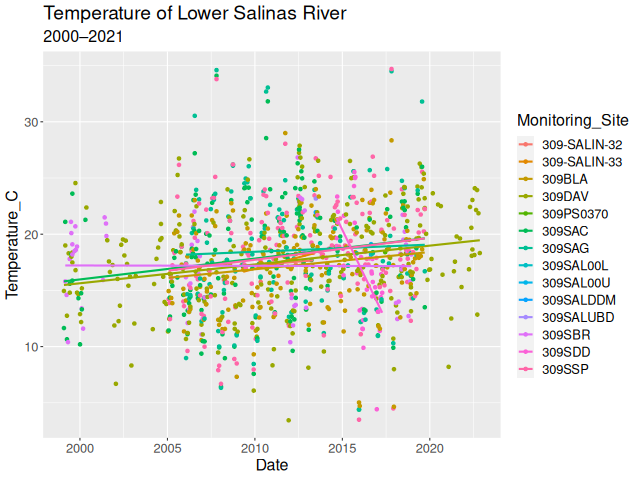

Version Control Using Git
Advantages of Version Control Software
Imagine not using version control software. How do you safeguard against inadvertantly adding bugs to your code? You make a copy, maybe with the date appended to the name, and blaze ahead.
Can be hosted online Good for code review
ReLEPTON (ReLEP subaTOmic kNock-off)
data_import <- read.csv("./data.csv")
data <- within(data_import, date <- as.Date(date))
criteria <- 21 # C°
# Make LOEs table
loes_total <- as.data.frame(table(data$Monitoring_Site))
names(loes_total) <- c("Monitoring_Site", "Total")
loes_exceedances <- aggregate(Temperature_C ~ Monitoring_Site,
data = data,
FUN = \(x) sum(x >= criteria))
names(loes_exceedances) <- c("Monitoring_Site", "Exceedances")
loes <- merge(loes_exceedances, loes_total)
# write.csv(loes, "loes.csv")loes
#> Monitoring_Site Exceedances Total
#> 1 309-SALIN-32 0 5
#> 2 309-SALIN-33 0 5
#> 3 309BLA 27 173
#> 4 309DAV 61 277
#> 5 309PS0370 0 1
#> 6 309SAC 56 180
#> 7 309SAG 38 117
#> 8 309SAL00L 0 1
#> 9 309SAL00U 0 1
#> 10 309SALDDM 1 1
#> 11 309SALUBD 1 1
#> 12 309SBR 9 56
#> 13 309SDD 9 38
#> 14 309SSP 48 164library(tidyverse)
data_import <- read.csv("./data.csv")
data <- within(data_import, Date <- as.Date(Date))
names(data) <- c("Monitoring_Site", "Date", "Temperature_C")
criteria <- 21 # C°
# Make LOEs table
loes_total <- as.data.frame(table(data$Monitoring_Site))
names(loes_total) <- c("Monitoring_Site", "Total")
loes_exceedances <- aggregate(Temperature_C ~ Monitoring_Site,
data = data,
FUN = \(x) sum(x >= criteria))
names(loes_exceedances) <- c("Monitoring_Site", "Exceedances")
loes <- merge(loes_exceedances, loes_total)
# write.csv(loes, "loes.csv")
# Make trends analysis graph
graph <-
ggplot(data, aes(x = Date,
y = Temperature_C,
color = Monitoring_Site)) +
geom_point() +
geom_smooth(method = "glm", se = FALSE) +
ggtitle("Temperature of Lower Salinas River",
subtitle = "2000–2021") +
theme(text = element_text(size = 16))
# png("graph.png", width = 640)
# graph
# dev.off()
